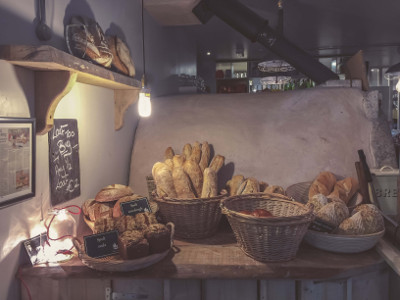
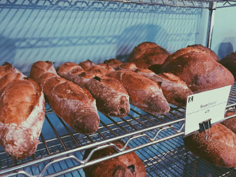

HOW TO EAT
パンを買ってきたけど、余ってしまった！
たくさん買いすぎた！というとき、ありますよね・・・。
そんなとき、最後までおいしく食べられるちょっとしたコツをご紹介します。
けっこう有名だと思うので、知ってるかたも知らないかたも『そうなんだ～』と軽く見ていただければ嬉しいです。
●常温保存？
パンを買った後にすぐ食べるつもりのものは、常温で保存しておきますよね。
でも、パンは生ものです。時間と共に老化していくもの。
水分を失って硬くなり風味も落ちます。季節によってはカビも心配ですね。
●冷蔵保存？
パンは生もの！と言いましたが、パンにとって冷蔵保存が一番適していません。
乾燥して硬くなりやすい条件がそろっていますし、（一般論として）冷蔵庫内のカビの付着が心配です。
ですがクリームやフルーツを使ったもの、サンドイッチなどは食べるまでに時間が空く場合、冷蔵庫で保存をおすすめします。

●冷凍保存？
最も大切なのは、「パンを買った時に食べ時を決断する」ということです。
というのも、時間が経っちゃったし冷凍でもしようという時には、すでにパンの風味が落ちて乾燥も始まっています。
だから出来るだけ早いうちに冷凍するかどうかを決めなくてはいけません。

●おいしく食べるポイント

●焼きなおすとふんわり戻るのはなぜ？
焼きなおすとふんわり戻るのは、パンのでんぷんの成分がβ化して硬くなったものが、またα化して柔らかさが戻るためです。
とはいえ完全に戻るわけではありませんので、熱いうちに召し上がって頂くか、やはり焼き立てを召し上がって頂くかのどちらかをお勧めします。